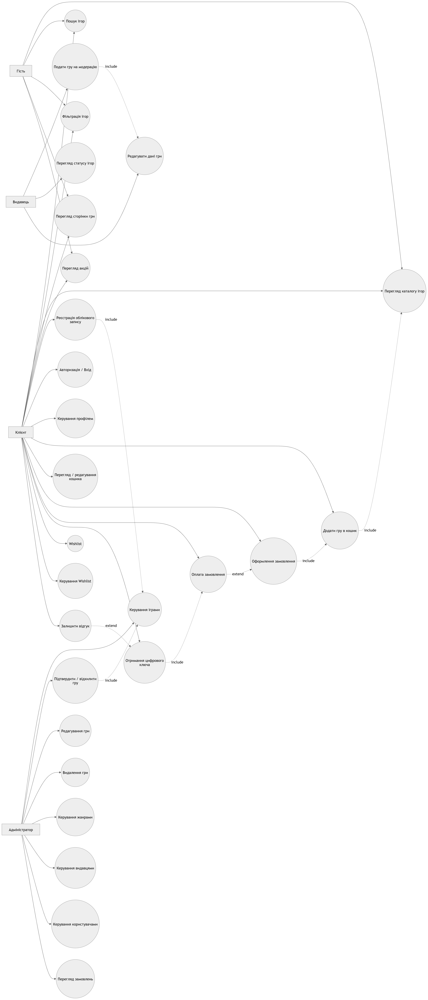
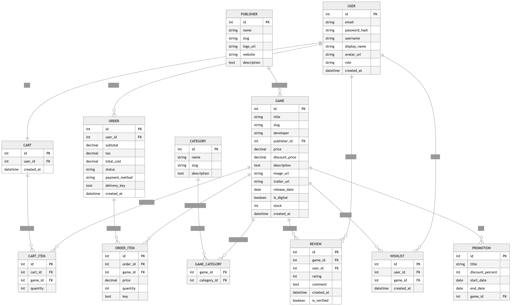

Вступ
1.1 Актуальність теми
Сучасний ринок цифрових ігор стрімко розвивається, а кількість користувачів, що купують ігри онлайн, постійно зростає. Існує потреба у зручних веб-платформах, які забезпечують швидкий пошук, фільтрацію, купівлю та управління цифровим контентом.
Розробка адаптивного веб-застосунку MELTRIX є актуальною, оскільки:
- користувачі потребують швидкого доступу до ігор із різних пристроїв;
- важливо забезпечити зручний пошук за жанром, видавцем, акціями;
- необхідна інтеграція кошика, списку бажаного та системи авторизації;
- важливо реалізувати сучасний адаптивний інтерфейс.
Таким чином, створення інформаційної системи для продажу цифрових ігор є практично значущим і актуальним завданням.
1.2 Мета роботи
Метою роботи є розроблення адаптивного веб-застосунку MELTRIX для пошуку, покупки та управління цифровими іграми з реалізацією сучасного інтерфейсу, кошика, авторизації та системи фільтрації.
1.3 Завдання роботи
Для досягнення поставленої мети необхідно:
- Проаналізувати предметну область цифрової дистрибуції ігор.
- Сформувати функціональні та нефункціональні вимоги.
- Спроєктувати структуру системи.
- Реалізувати адаптивний інтерфейс.
- Реалізувати систему реєстрації та авторизації.
- Реалізувати каталог ігор із фільтрацією.
- Створити кошик покупок.
- Реалізувати список бажаних ігор (Wishlist).
- Реалізувати пагінацію каталогу.
- Забезпечити мультимовність інтерфейсу.
- Побудувати Use-case та ER-діаграми.
1.4 Об’єкт роботи
Об’єктом роботи є процес онлайн-продажу цифрових ігор через веб-застосунок.
1.5 Предмет роботи
Предметом роботи є методи та засоби розробки адаптивного веб-застосунку для управління каталогом ігор, кошиком та обліковими записами користувачів.
1.6 Опис предметного середовища
MELTRIX – це веб-застосунок для покупки, пошуку та управління цифровими іграми для ПК та консолей.
Система надає можливість:
- переглядати каталог ігор;
- фільтрувати за жанром, видавцем, ціною, датою видавництва;
- переглядати акційні пропозиції;
- формувати кошик;
- зберігати ігри у Wishlist;
- проходити авторизацію;
- здійснювати покупку.
1.7 Бізнес-логіка роботи системи
Сценарій взаємодії користувача:
- Користувач відкриває головну сторінку.
- Переглядає каталог або виконує пошук.
- Фільтрує ігри за категоріями.
- Додає гру у кошик або Wishlist.
- Авторизується або реєструється.
- Підтверджує замовлення.
- Отримує доступ до придбаного контенту.
1.8 Функціональні вимоги
Система повинна забезпечувати:
- Реєстрацію та авторизацію користувачів.
- Пошук ігор за назвою.
- Фільтрацію за жанром, видавцем, ціною, датою видавництва.
- Перегляд каталогу з пагінацією.
- Формування кошика.
- Видалення товарів з кошика.
- Підрахунок загальної вартості.
- Оформлення покупки.
- Збереження ігор у Wishlist.
- Відображення акцій та знижок.
- Мультимовність інтерфейсу.
- Адаптивний дизайн для різних пристроїв.
1.9 Нефункціональні вимоги
Система повинна відповідати:
- Продуктивність – швидке завантаження сторінок.
- Надійність – збереження даних користувача.
- Безпека – захист облікових даних.
- Зручність – інтуїтивний інтерфейс.
- Кросбраузерність – підтримка сучасних браузерів.
- Масштабованість – можливість розширення функціоналу.
- Адаптивність – коректна робота на ПК, планшетах, смартфонах.
1.9 Use-case діаграма
Нижче представлена Use Case діаграма, яка показує основні взаємодії користувачів з системою.

1.10 ER-діаграма
ER-діаграма описує логічну структуру реляційної бази даних застосунку MELTRIX, що охоплює всі функціональні вимоги системи.
